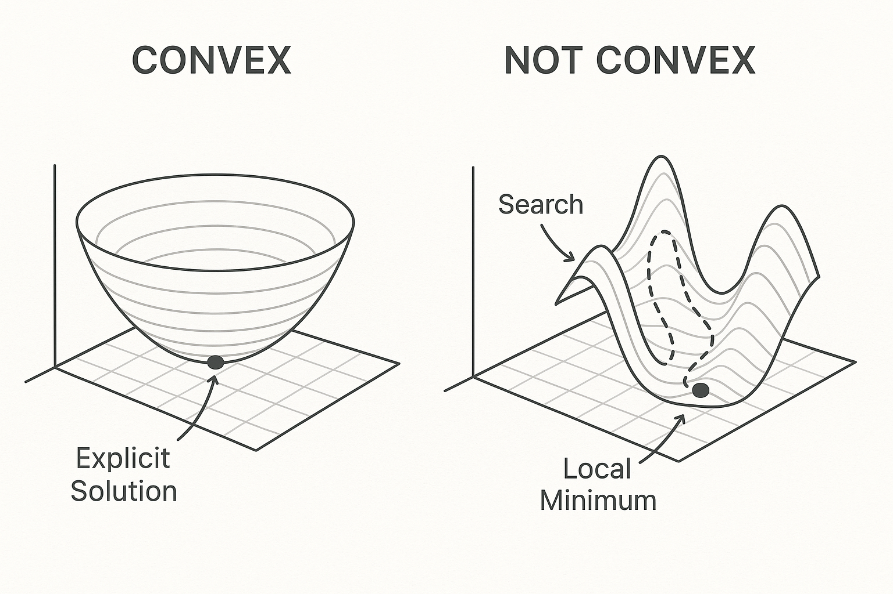
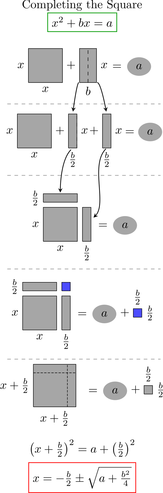

Which Math Problems Have Closed-Form Solutions and Why?
Published on October 10, 2025
Introduction
We're all familiar with math problems of the form "solve for x". Well, it turns out that doing this isn't always possible. In this essay, we will explore the criteria for determining whether a closed-form solution exists.
The first time I encountered a problem without a closed-form solution, I was building my Portfolio Optimizer program. In the simplest case of minimizing portfolio variance for a given expected return, the optimal weights can be solved for explictly. I used the Lagrange Multiplier method, which conceptually is just setting the gradient of the objective function to zero to find that minimum point. But, once you complicate it by, for example, introducing an inequality constraint such as disallowing short-selling (requiring weights ≥ 0%), the gradient becomes discontinuous and we can't explictly solve for the weights anymore.
The way I think about it is that, for "nice" optimization problems (those with functions that are: convex, differentiable, and linear or quadratic), there are methods that allow you to do something similar to "solving for x". But, for more complex problems involving state-spaces that are more rugged, like those of non-convex functions, you must instead run an algorithm to iteratively search for the minimum.

This is one of those topics in math that shows the limits of human knowledge. A calculator, through a deterministic process, provides exact answers to questions that have closed-form solutions, such as "what is $2 + 2$?". But, when an LLM is asked a question, its response is generated using numerical methods, and so in some ways it is never exactly "solving" anything. It is instead searching a vast space of possibilities to find the most likely answer. It's hard to say where humans would fall on this spectrum.
I. Polynomial/algebraic equations
Consider the simple linear equation $2x + 3 = 7$.
Nothing too surprising there. We were able to find a closed-solution by isolating $x$. But before investigating whether more complex equations have closed-solutions, how can we know whether a solution to a polynomial exists at all?
The Fundamental Theorem of Algebra states that every polynomial of degree n has exactly n complex roots.It's easy to visualize the FTA for functions with real roots (the three plots below). You can see that for a degree 1 polynomial (a line), there is always one root (where it crosses the x-axis), for degree 2 (a parabola) there are always two roots, and for degree 3 (a cubic curve) there are always three roots.
So, we know for certain that: (i) there exists exact solutions to all polynomials and (ii) some polynomials can be directly solved for using algebraic manipulation. It turns out that polynomials of degree 1-4 have closed-form solutions, and you can express them in a general formula. For example, quadratic equations (polynomials of degree 2) have a closed-form solution (the quadratic formula) that is taught in school. By ordering the equation into standard form $ax^2 + bx + c = 0$, we can directly apply the quadratic formula to find the roots.

By Krishnavedala - Own work, CC BY-SA 3.0, Link
This was discovered when some mathematicians, instead of rearranging terms of polynomials to solve for roots as we are used to, found ways to rearrange or "permute" the polynomial's roots themselves in a way that left the polynomial's coefficients unchanged. This might sound pretty abstract at first, but ultimately it is just a way of revealing the inherent structure of a polynomial by viewing it from different perspectives. To explain this further, we must introduce some additional terms and theory.
A symmetry of a system is a transformation that changes something about the system but leaves some other property unchanged, which we call an invariant. For example, rotating a perfect sphere changes its orientation but leaves its shape and size unchanged. A sphere has rotational symmetry that leave its shape invariant.Like a sphere, a polynomial can also have symmetries. The set of all symmetries that permute the polynomial's roots but leave the polynomial's coefficients unchanged is called its Galois group, $G$. Let's look at a simple example to see how this works in practice.
A solvable group is one whose symmetries can be broken down step-by-step until only the trivial symmetry (the identity) remains. So, in the case of polynomials, the identity symmetry can be represented as: $x \mapsto x$. Let's do a fully worked out example using $f(x) = x^2 - 2$ again to see how this works. Let's start with the first example to explain how Galois used these symmetries to determine whether a polynomial has a closed-form solution.
- Step 1: Identify the symmetries of the polynomial that permute its roots while leaving the polynomial unchanged.
- Step 2: Collect all these symmetries into a mathematical structure called a group, specifically the Galois group of the polynomial.
- Step 3: Analyze the structure of this Galois group to determine if it is a solvable group.
- Step 4: If the Galois group is solvable, then the polynomial has a closed-form solution using radicals; otherwise, it does not.
- - The example is x^2-2.
- - The Galois Group is the set of all permutations of those roots that keeps the polynomial the same, so in this case just sigma: x=>-x, which sends sqrt(2)=>sqrt(2) and then just the identity id: x=>x which sends sqrt(2)=>-sqrt(2).
- - So the Galois Group G = {id, sigma}. Because a subgroup must always contain the identity, the only two subgroups are {id} and G. That is because all groups (and subgroups) must be closed under composition. Sigma is not a group on its own because sigma composed with sigma would get you the identity, which is then not a part of sigma.
Now, Galois theory tells us that if the Galois group of a polynomial is a solvable group, then the polynomial has a closed-form solution. A solvable group is one that can be broken down into a series of simpler groups through a process called a group extension. In this case, the Galois group $G$ is indeed solvable, which aligns with our earlier finding that the polynomial $x^2 - 2$ has a closed-form solution: $x = \pm \sqrt{2}$.
The key insight from Galois theory is that the structure of the Galois group reflects the complexity of the polynomial's roots. For example, if the roots are all distinct and can be expressed using radicals, the Galois group will be a solvable group. However, if the roots exhibit more complicated behavior, such as being expressed in terms of elliptic functions or other transcendental functions, the Galois group may not be solvable, indicating that no simple closed-form solution exists. For lower-degree equations, these groups of symmetries are simple enough that they can be “unwound” using addition, subtraction, multiplication, division, and roots — that’s why we have the quadratic, cubic, and quartic formulas. But starting at degree 5, the possible symmetries are too complicated: they don’t break down into smaller, solvable pieces that correspond to these algebraic operations. The operations we know just aren’t powerful enough to express all possible root patterns in a neat, finite formula.
Linear systems
And then consider a slightly more complex example, a system of two linear equations with two unknowns:
TODO Nothing surprising there, but how can we predict if an equation (or set of equations) will have a closed-form solution like the above examples?
Well there are two requirements that guarantee a closed-form solution for linear systems. You can find other ways of stating these two requirements, but I find the most intuitive to be:
When to expect closed-form solutions for linear systems
- ✔System is determined: There are the same number of linear equations as unknown variables. In the above example there is one unknown, $x$, and one equation that contains that unknown.
- ✔System is linearly independent: One equation cannot be expressed as a linear combination of the others, meaning that the two equations encompass all the necessary information to find a unique solution in all of $\mathbb{R}^2$, or the coefficient vectors' "span" is equal to $\mathbb{R}^2$.
✔ It has two unknowns and two equations (it is determined)
✔ The equations are linearly independent, which you can show yourself by drawing their coefficient vectors $\mathbf{v_1} = \begin{pmatrix} 2 \\ 3 \end{pmatrix}$ and $\mathbf{v_2} = \begin{pmatrix} 4 \\ -1 \end{pmatrix}$ in 2D space and observing that they are not parallel.
Non-linear systems
We have up until now only looked at linear equations because they are the simplest case.Which systems of equations have solutions?
That’s what the Abel–Ruffini theorem means in practice. It doesn’t say quintic equations can’t be solved at all — only that there’s no universal recipe, no single expression using a finite sequence of arithmetic and root extractions that works for every fifth-degree polynomial. Some special quintics do have closed forms, but in general, the structure of their root symmetries is beyond algebraic reach.
But starting at degree 5, mathematicians proved that there is no single formula involving finite steps that can solve all equations. This result, known as the Abel–Ruffini theorem, marks a boundary in mathematics: beyond it, some equations simply cannot be solved exactly, only approximated numerically.
The study of why certain classes of equations have closed-form solutions and others do not led to the development of Galois theory, which uses group theory to analyze the symmetries of the roots of polynomials. This is definitely beyond the scope of this little essay, but to understand why equations above degree 4 can’t always be solved by a formula, we have to think about what these formulas really do. Every time we solve for $x$, we’re trying to “undo” the polynomial, or express the roots using only basic arithmetic and root operations. For quadratics, cubics, and quartics, this can be done through some process of rearranging the terms, as we have done so far.
II. Numeric Solution Example
Now let's look at examples where there is no closed-form solution. Here is a very small numeric example that shows an iterative solver in action. We'll compute $\sqrt{2}$ by solving $x^2 = 2$ using Newton's method. This method produces a sequence of approximations $x_{n+1} = x_n - \frac{f(x_n)}{f'(x_n)}$ which converges rapidly for this problem.
Before going deeper, it helps to classify the kinds of problems we try to solve. One useful lens is that there are four common goal types in mathematics; this context makes it clearer when closed forms exist and when they usually do not.
Level I — Goal Type (What you’re trying to find)
| Category | Description | Typical Form | Closed-Form Chance |
|---|---|---|---|
| A. Equation / Root Finding | Find $x$ such that $f(x)=0$. | Polynomial, exponential, trigonometric equations. | High for linear or low-degree polynomials; falls rapidly for general nonlinear equations. |
| B. Optimization | Find $x$ minimizing or maximizing $f(x)$. | Linear, quadratic, or nonlinear objectives (with constraints). | Depends on convexity and constraints; closed form mostly for simple linear/quadratic with equality constraints. |
| C. Integration / Summation | Compute an area or total, $\int f(x)\,dx$ or $\sum f(x)$. | Integrals, series. | Often no closed form; numeric approximation (e.g., Simpson’s rule, Gaussian quadrature, Monte Carlo) is standard. |
| D. Differential / Dynamic Systems | Solve for a function $y(t)$ such that $F(y, y', t)=0$ (or systems/PDEs). | ODEs, PDEs, state-space models. | Rare closed forms; iterative or symbolic approximation dominates. |
Understanding when you can expect a neat formula versus when you'll need computational power is crucial for both theoretical understanding and practical problem-solving. Let's explore the patterns that determine which mathematical problems yield to direct solution and which require numerical approximation.
Practical Rule of Thumb
- Linear + Equality constraints → Closed form
- Quadratic + Convex → Sometimes closed form
- Nonlinear or inequality-constrained → Numeric methods
- Convex ⇒ Global solution exists (even if numeric)
- Nonconvex ⇒ Only local minima guaranteed
Linear regression provides a perfect example. The ordinary least squares problem minimizes $||Ax - b||^2$, which leads to the normal equation:
This closed-form solution exists because the objective function is quadratic and the constraints are linear—creating a convex optimization problem with a unique global minimum.
Quadratic Problems: Sometimes Solvable
Quadratic equations, despite being nonlinear, often admit closed-form solutions due to their special algebraic structure. The familiar quadratic formula for $ax^2 + bx + c = 0$ is:
This generalizes to quadratic optimization problems. Consider mean-variance portfolio optimization, where we minimize portfolio risk $x^T \Sigma x$ subject to achieving expected return $\mu^T x = r$. The Lagrangian approach yields:
This closed-form solution exists because the problem is convex quadratic with linear equality constraints. However, add inequality constraints (like "no short selling": $x_i \geq 0$), and you need numerical methods like quadratic programming solvers.
The Convexity Boundary
Convexity is the crucial dividing line in optimization. A function $f$ is convex if for any two points $x_1, x_2$ and any $\lambda \in [0,1]$:
Geometrically, this means the function lies below any line segment connecting two points on its graph—it "curves upward" like a bowl. Even when convex problems lack closed-form solutions, they guarantee that any local minimum is also a global minimum, making numerical methods reliable.
Convex Function Visualization
Bowl-shaped level curves
Any path to the bottom leads to the global minimum
Consider the function $f(x,y) = x^2 + y^2$. Its level curves are concentric circles centered at the origin, forming a paraboloid. Any optimization algorithm started from any point will converge to the global minimum at $(0,0)$.
When Closed Forms Disappear
Several factors can destroy the possibility of closed-form solutions:
Inequality Constraints
Even linear programs like maximizing $c^T x$ subject to $Ax \leq b$ and $x \geq 0$ require iterative methods (simplex, interior point) because the feasible region has corners where the gradient is undefined.
Nonlinear Objectives
Problems like $\min f(x)$ where $f$ is a neural network, exponential function, or trigonometric expression generally lack closed forms. The Abel-Ruffini theorem proves that polynomial equations of degree 5 and higher cannot be solved by radicals in general.
Non-convex Landscapes
Functions like $f(x) = x^4 - 2x^2$ have multiple local minima. Even if you could solve $f'(x) = 0$ analytically, you'd need additional methods to determine which critical point is the global minimum.
The Numerical Alternative
When closed forms fail, numerical methods step in:
- Gradient Descent: For smooth convex problems
- Newton's Method: When you can compute second derivatives
- Simplex Algorithm: For linear programs
- Interior Point Methods: For convex programs with constraints
- Stochastic Methods: For non-convex optimization (SGD, genetic algorithms)
The trade-off is clear: numerical methods can solve far more general problems but provide approximate solutions and require computational resources proportional to desired accuracy.
Practical Implications
Understanding this landscape helps you:
- Choose appropriate methods: Don't use gradient descent on linear systems
- Set realistic expectations: Non-convex problems may require multiple random restarts
- Appreciate approximations: Sometimes reformulating a problem to make it convex is worth the approximation error
- Design algorithms: Machine learning models often sacrifice closed-form solutions for expressiveness
The Beauty of Structure
The existence of closed-form solutions reveals the deep mathematical structure underlying a problem. Linear algebra works so elegantly because linear transformations preserve geometric relationships. Quadratic forms yield to analytical methods because they represent the simplest non-trivial curvature.
When problems become complex enough to require numerical methods, we're not just trading convenience for generality—we're crossing a fundamental threshold where the problem's structure becomes too rich for symbolic manipulation but still regular enough for computational solution.
The next time you see a differential equation that requires numerical integration or an optimization problem that needs iterative solving, remember: this isn't a failure of mathematics, but rather a testament to the problem's inherent complexity. The boundary between analytical and numerical solutions maps directly onto the boundary between different classes of mathematical structure.
In the end, both closed-form solutions and numerical methods are tools for extracting insight from mathematical models. The key is knowing which tool fits which problem—and understanding why the mathematical structure determines that choice.